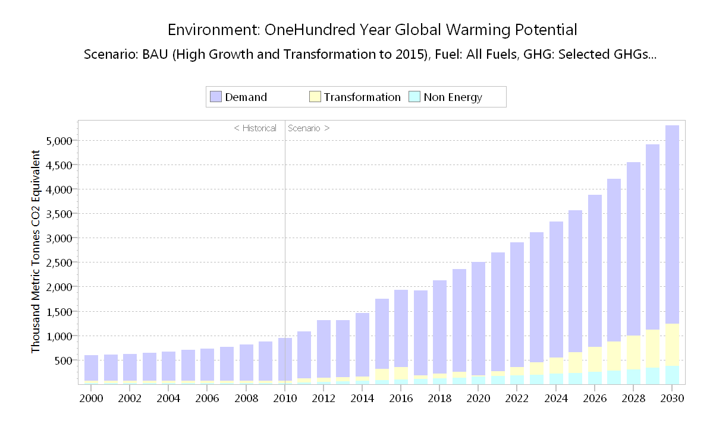
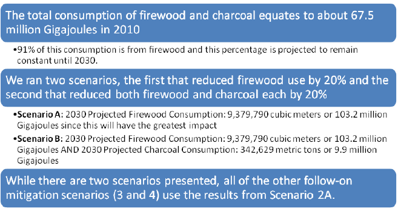
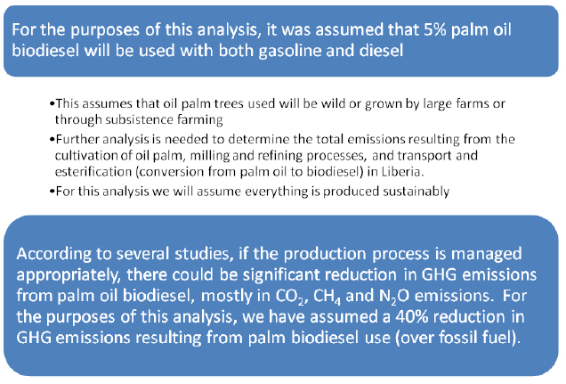
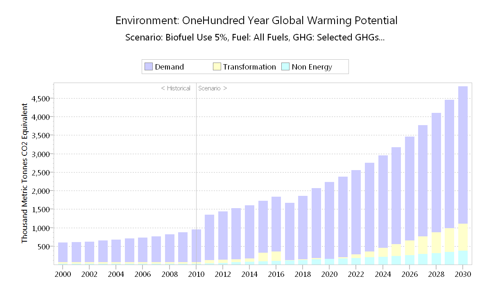
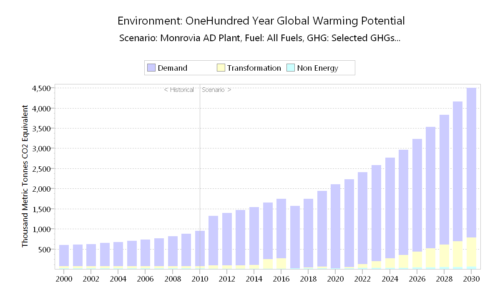

Mitigation Targets
The energy sector is the highest contributor of GHG in Liberia emanating mainly from the use of traditional fuels such as firewood, charcoal and palm oil and the use of fossil fuels, especially petroleum products. To reduce the reliance on traditional fuel and increase the use of modern and renewable energy sources, the National Energy Policy (2009) was developed with a set of goals targeted at maximizing efficiency, minimizing costs and adverse environmental impacts as principle of extending energy access to all Liberians. Most recently, Liberia’s Initial National Communication (2013) reinforces the National Energy Policy with additional long-term targets and related activities, which includes:
- Reducing GHGs by at least 10% by 2030
- Improving energy efficiency by at least 20% by 2030
- Raising share of renewable energy to at least 30% of electricity production and 10% of overall energy consumption by 2030
- Replacing cooking stoves with low thermal efficiency (5-10%) with the higher-efficiency (40%) stoves.
The long-term strategy of Liberia is to achieve carbon neutrality by 2050. The strategic options for mitigation considered under the INDC are the energy sector (electricity, transport) and the waste sector. The Waste Sector focuses on solid waste disposal on land. In 2000, the waste sector accounted for about 0.60% of Liberia’s national total CO2 eq emissions. A significant subcategory is CH4 emissions from solid waste disposal sites (SWDS) on land, which contributed 91.7%. CH4 mitigation targets will include landfill recovery, waste incineration with energy recovery, composting of organic waste, controlled wastewater treatment, and recycling and waste minimization.
Business-As-Usual Scenario Assumptions
I. Business-As-Usual High Growth Scenario

Mitigation Scenario 1: 30% Renewable Generation

The main difference: In the 30% renewable scenario, we assume a 30 MW biomass project comes online. Additionally, if Transmission & Distribution (T&D) losses are higher than 20%, more renewable generation will be needed to meet the 30% goal.

Mitigation Scenario 2: 20% Energy Efficiency (EE)

Mitigation Scenario 2A: 20% Energy Efficiency (EE) – Firewood Only

Mitigation Scenario 2B: 20% Energy Efficiency (EE) – Firewood and Charcoal
Mitigation Scenario 3: 5% Biofuel Use in Transport


Mitigation Scenario 4: Waste Sector (Landfill Gas)


Mitigation Summary


The implementation of the mitigation interventions will require availability of financial resources, technology development and transfer, and capacity building from the international community. The outcome of the Paris new agreement under the Convention is expected to be in full conformity with equity and common but differentiated responsibilities; and the contributions forthcoming from developed country Parties will be in a balanced manner in the context of a global and comprehensive agreement for the period beyond 2020.
With regard to the methodological approach, the Revised 1996 IPCC Guidelines and the guidelines in IPCC Good Practice Guidance and Uncertainty Management in National Greenhouse Gas Inventories, 2000 (IPCC GPG ) were used to calculate the GHG emissions and removals as described in the Initial National Communication. The basic assumptions are as follows:
- 2011 – First Scenario Year
- 2030 – Target Year
- GHGs – CO2, CH4 and N2O
- Historical emissions (up to Year 2010) came from the Options for Development of Liberia’s Energy
- Sector Report and the Initial National Communications (INC)
- Each subsequent mitigation scenario is built on the one before it.
- For example, the 30% renewable generation scenario leads to a certain reduction in GHG emissions, and the next scenario – 20% energy efficiency scenario on cook stove distribution – layers additional GHG reductions on top of the 30% renewable scenario.
Below are proposed mechanisms in key sectors aiming to facilitate Liberia’s INDC. It is prudent to note that these were developed with the view to implement upon the provision of means of implementation by the international community. For Mitigation, Liberia will focus on the following sectors orientation and specific actions:
Energy:
- Strengthen implementation and coordination mechanisms to improve climate change mitigation actions.
- Implement quantitative and qualitative research and improve systematic priority sequencing between National Energy Policy, Low Carbon Economy, and National Vision 2030 developmental goals.
- Strengthen institutional and individual capacity in renewable energy technology and management.
- Implement and strengthen policy that promotes private investment in renewable energy (hydro, biomass and solar etc).
- Rehabilitate existing hydro-power plants and build new hydro-power plants to increase hydro-power production capacity.
- Produce and distribute 280,543 energy saving cook stoves that use fuel wood and 308,004 energy saving cook stoves that use charcoal by 2030.
- Implement large scale biomass projects to generate about 30 MW by 2030.
Waste:
- Strengthen institutional and individual capacity for waste management.
- Develop waste management infrastructure.
- Implement and strengthen policy that promotes private investment in waste management.
- Capture methane gas emitted from landfills and used for fuelling vehicles, cooking at home or generation of power.
Transport:
- Mainstream climate change into existing transport management plan to strengthen emission control.
- Strengthen institutional capacity for developing strategies for integrated transport services; developing technical and safety standards and the enforcement of policies including emission control.
- Improve the quality and reliability of transport infrastructure and services.
- Develop emission reduction and tracking system of pollutants from vehicles.
- Blend up to 5% of palm oil biodiesel with both gasoline and diesel by 2030 for vehicles.